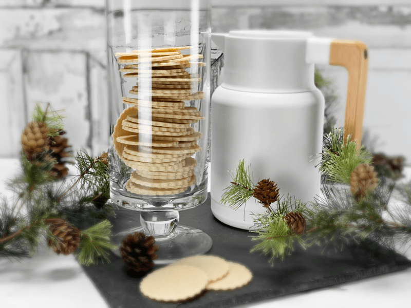
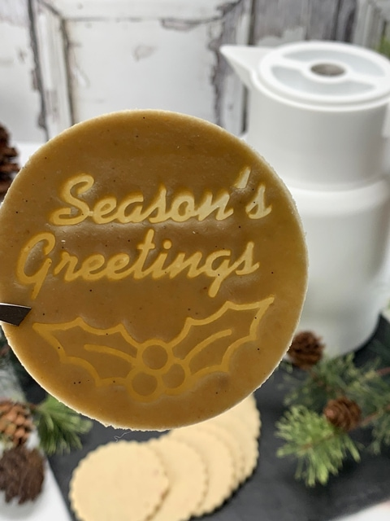

Old Fashioned Sugar Cookie Wisps
Old Fashion Sugar Cookies Wisps… are just what they sound like. They have the rich “butteriness” of baked sugar cookies, and they are almost paper-thin, giving them a unique snappy texture. The butteriness comes from the combination of vanilla bean seeds and the almond extract.

The key is to roll the dough out very, very thin. I will post a picture below where I pressed a cookie stamp into the dough after it was rolled out. The stamp didn’t punch through, but it made it so thin that the light could shine through when I held it up. It will take a gentle hand when transferring them from the rolled-out dough to the dehydrator tray, but trust me; it can be done. And should you mess up, no biggy, throw it back into the dough scraps and reroll it out.
Almond Flour Tip
You want the almond flour to be very fine in texture. You don’t want to use whole almonds ground down. They won’t break down enough and will leave chunks in the cookies. To make a fine raw flour, use the almond pulp that has had the skins removed. I provided a link below in the ingredient list. You can also use store-bought almond flour, but it won’t be raw. It’s up to you.
Once the cookies were done drying, I allowed them to cool before I even touched them. I was heavily tempted, but I wanted to see if they would firm up during the cooling process. Once they were cool to the touch, I picked up the tray, and they all slid onto the table like poker chips… they even sounded like poker chips.
They don’t stick to one another, so they are fun to stack up for presentation and/or gift-giving. Don’t store them in the fridge; otherwise, they will get tacky to the touch. Just make sure to keep them well sealed if they aren’t going to be enjoyed right away. These are lovely dipped into fresh almond milk or better yet… hot chocolate!
Ingredients
Yields 24+ cookies
- 2 cups fine almond flour
- 1/3 cup dried coconut flakes, powdered
- 1/4 tsp Himalayan pink salt
- 1/3 cup maple syrup
- 1/2 vanilla bean, seeds only
- 1/2 tsp almond extract
Preparation
- In a food processor, fitted with the “S” blade, combine the almond flour, powdered coconut, and salt. Blitz until combined.
- The key here is to use very fine almond flour. You can make your own with almond pulp (see the link above), or you can purchase it (won’t be raw).
- Add sweetener, vanilla bean seeds, and almond extract. Process until it starts sticking together and forms a ball.
- Line your surface with plastic wrap and place the dough ball in the center.
- Cover with another piece of plastic, then start to roll the dough out to about 1/8″ thick.
- Remove the top plastic piece and using cookie cutters, cut out the circular shape and gently transfer them to the mesh sheet that comes along with your dehydrator.
- Dipping the cookie-cutter edges in water can help with removing the cookie dough from the cookie-cutter (if they start sticking).
- Dry at 145 degrees (F) for 1 hour, then reduce to 115 degrees (F) for roughly 10-16 hours or until desired dryness is reached.
- Store in an airtight container. If you place them in the fridge, they will get sticky.
Culinary Explanations:
- Why do I start the dehydrator at 145 degrees (F)? Click (here) to learn the reason behind this.
- When working with fresh ingredients, it is essential to taste test as you build a recipe. Learn why (here).
- Don’t own a dehydrator? Learn how to use your oven (here). I do, however honestly believe that it is a worthwhile investment.

So thin, the light can shine through the wording in the cookie stamp that I used. :)
© AmieSue.com